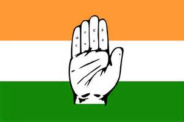

Gandhi was born on Oct.2nd, 1869 in the Porbandar province of India. He was born into the Vaisya caste, one of the castes in the Hindu religion. His father was the prime minister of various states in the country. This gave him some privileges. His mother was a deeply spiritual woman. This made Gandhi familiar to many of the cultural values of India.
When Gandhi studied in high school, he wanted to be a doctor. But his father disapproved that and sent him to study law. Gandhi studied abroad in the UK for college, and completed his law degree in 1891.14
Gandhi was employed by a South African firm, and he moved to South Africa. There, he experienced the discriminations towards Indians, and stood up against the growing anti-Indian movement.9
In South Africa, Gandhi’s supporters were mostly his colleagues in the Indian firm and other Indian residents near them. Together they set up spiritual centers and other organizations that united all local Indians to stand up against the government. 9
 The movements turned out to be successful and Gandhi returned to India with his supporters. There he helped the INC to conduce more movements and eventually led to the independence of India. Back in India, Gandhi’s supporters were members of the INC or its supporters. The INC is the major organization during the Indian independence, and most of its members joined the Indian government after their success. 25
One of his movements is the Salt March. In the movement, he followed his pacifist ideas and proved that India can be economically independent, and the independence would benefit the country greatly. This event would be further explained in the "events" section of Gandhi.
Gandhi died in Jan.30th,1948, when he was at public prayer, an extremist assassinated him.28